Why The First World War/Great War Started?
Because the Archduke of Austria-Hungary was killed by a serbian man in Sarajevo during a visit. And this caused Austria-Hungary and its ally Imperial Germany with its Kaiser to Declare wasr on serbia. But Serbia is allied to Russia that is also allied by France and the United kingdom/Great Britain somewhat but not exactly because french and british relations were tense due to their former wars against each other. But in the end Germany and Austria-Hungary is the Central Powers versus the Allies which are Russia,France,United Kingdom/Great Britain, and in the later part the United States.
What was the things Invented during The First World War/Great War?
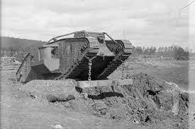
Tanks, Air Warfare, Submarines, Barbed Wire, Machine Guns, Chemical Warfare, Trench Coats, Portible X-Rays, and Patriotic Propaganda
Who Were The Leaders of The First World War/Great War
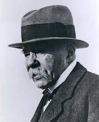
Georges Clemenceau-France-Lead France's 3rd Republic During WW1

George V- United Kingdom/Great Britain-King of The United Kingdom/Great Britain during WW1 and tried to make peace during the entire war and console his cousin Kaiser Wilhelm II of The Empire of Germany/Imperial Germany
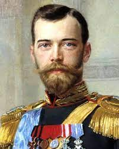
Nicholas II- Empire of Russia-Tsar of Russia before being over thrown by the bolshoviks and was killed with his family in a Coup
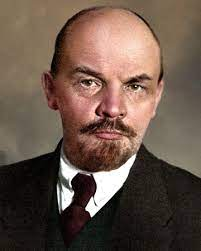
Vladamir Lenin- Ussr-used the horrible Tactic of No Peace-No War but cause the Ussr to lose more territory and worse end war terms but he was supported by the kaiser to overthrow Tsar and was the first dictator of the Ussr
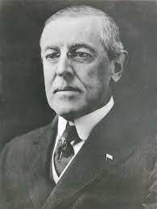
Woodrow Wilson- United States-he tried to stay out of the war but he was forced to join and help stop the war. He refused the treaty of paris two times. the treaty to lay the foundations for another world war
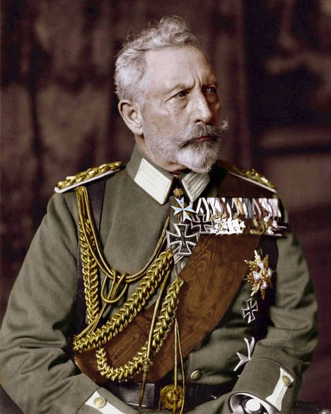
Wilhelm II- Imperial Germany- helped Austia-Hungary get revenge but was stopped by the allies and was exiled to belgium afterf the war and lost power
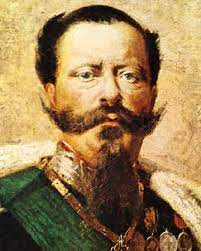
Victor Emmanuel III- Italy- was a key person for the lower front and the first time they used mountain warfare seriously to fight the austian-hungarian side by the alps
Types of Warfares During WW1/Great War
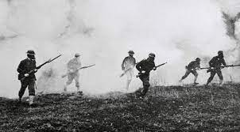
Chemical Warfare-Using Chemical Wepons to gain a advantage in the battle field like gassing them. Like the gas Franz Harber the Devil Saint because he created The gas used to kill multiple people during the trench warfare but made artificial fertilizers to make the human race survive. The man who killed Millions but Saved Billions.This was used in all fronts
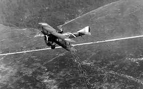
Air Warfare-Using planes to bomb stratigic targets and could be destroyed by a.a./Anti Aircraft and fighter planes or any planes with a gun caliber to kill solders at the ground. And example of this being effective was the famed Red Baron. This was used in all fronts
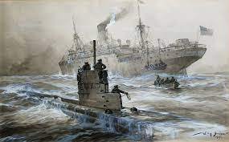
Submarine Warfare-Sinking enemy supplies by sinking their supply ships. Used in the Atlantic
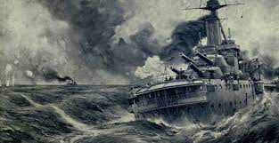
Naval Warfare-Sinking enemy ships to contol sea territory and has Destroyer, Cruiser, Battle-Cruiser, and Battleship catigories
Sides During WW1/Great War
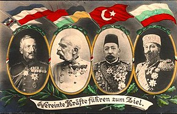
Central Powers-Emprire of Germany/Imperial Germany and Austia-Hungay and Bulgeria and Ottoman empire
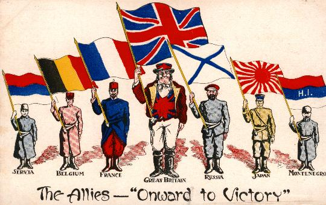
Allies-France, United Kingdom/Great Britain, Russian Empire, and United States,Empire of Japan, Serbia, and montenegro